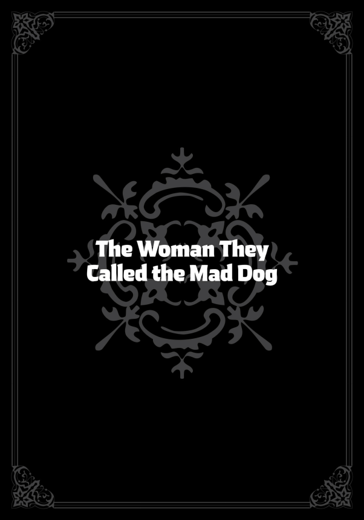
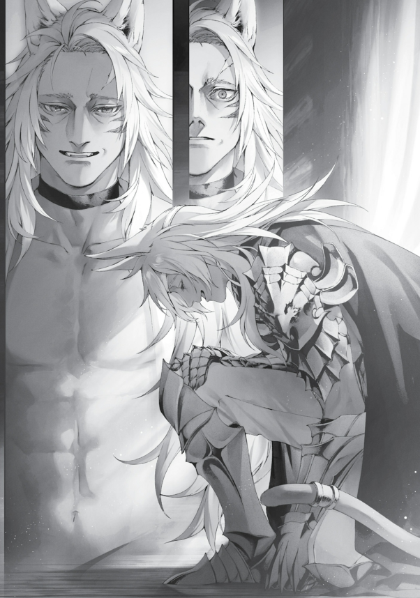

Arkadaşım Dohga’nın yakın zamanda evlendiğini duydum. Kuzey İmparatoru Dohga—hayatımı borçlu olduğum o nazik güçlü adam. Açıkçası, başta biraz endişelendim. O saf yürekli adam mı evlenmiş? Kesin bir yılan ruhlu kadın onu kandırmıştır. Eğer öyleyse, gidip onu kurtarmak bana düşerdi tabii.
Ariel’den bir şeyler öğrenmeye karar verdim. Adam avcısını araştırmaya kafayı iyice takmışken Eris’e bir mektup geldi. Mektubu gönderen, Isolde Cluel’di. Su İmparatoru Isolde—Biheiril Krallığı’ndaki savaşta bize yardım eden o masum güzellik. Mektubunda Su Tanrısı unvanını aldığından ve Reida ismini miras bıraktığından bahsetmişti. Ayrıca, aşık olduğunu ve evlendiğini yazmıştı… Hem de Dohga ile.
Şaka gibi, o narin güzellik Dohga’nın karısı olmuştu. Kutlamak gerekirdi tabii. Ama Biheiril Krallığı’nda bize yardım etmiş olsa da, geceleri ne işler çevirdiğini kim bilebilirdi? Bu ihtimali göz ardı edemezdim.
Eris’e, Isolde’nin nasıl biri olduğunu sordum. Eris, “Kötü biri değil,” dedi. Ama bu beni pek tatmin etmedi. O yüzden Asura Krallığı’na gidip Ariel’in bu konudaki fikrini bir öğreneyim dedim. Luke’la arayı yapıp, Ghislaine’den ufak ufak bilgi topladım. Hatta bir süre gölgelerde pusuya yatıp Dohga’yı gözlemledim, Su Tanrısı eğitim salonuna gidip kendimi tanıttım, ardından Cluel ailesinin başına da ufaktan sorular sormayı ihmal etmedim.
“Vay,” dedi Ariel alaycı bir şekilde, “ne kadar boş vaktin varmış senin.”
Öyle bir şey yoktu! Bunu sırf vakit öldürmek için yapmıyordum—Dohga’ya hayatımı borçluydum ve onun üzülmesine izin veremezdim!
Her neyse, sonunda bir gerçek ortaya çıktı: Isolde, adam seçerken dış görünüşe önem veren bir tipti.
Demek gerçekten kara kalpli bir şeytansın, Isolde… Ama bunu öylece kabul edeceğimi sanma…
Tabii araştırmamın sonucunda ikisinin de birbirine sırılsıklam aşık olduğunu öğrenmem biraz tatsız oldu.
Dohga gerçekten mutlu görünüyordu. Söylentiye göre etrafta kimse yokken, Isolde ona “aşkım” diyormuş ve onu öpücüklere boğuyormuş. Isolde’nin tipine göre adam seçtiğini düşündüğümden, Dohga’nın yüzünden başka bir şey bulmuş olmalı ki onu seçmiş. Karmaşık bir yol izleyerek de olsa sonunda ruh eşini bulmuştu.
Aynı şekilde, Dohga hayatımı kurtarana kadar onu tamamen işe yaramaz bir odun sanıyordum. Kendi içimde kötü niyetli biriydim, kötü adam rolündeydim. Öyleyse, Isolde’yi nasıl yargılayabilirdim ki? Bu sonuca vardıktan sonra çifti kutsayıp eve doğru yola koyuldum.
Ama Isolde ve Dohga ha? İnsan kimin kiminle olacağını gerçekten kestiremiyor. Düşünsene, ben bile üç kişiyle evleneceğimi hayal edemezdim. Kendi evliliklerim yüzünden duygusallaşarak eve dönerken içimden böyle düşündüm.
Üç gün sonra:
“Canım canım canım, ben beastfolk köyüne gitmek istiyorum!” Bu, Eris’ti. Isolde’nin evlilik haberi neşesini yerine getirmişti ve bu da bizim alışıldık koltukta yayılma zamanımızdı.
“Ne oldu şimdi durduk yere?” diye sordum. Eris’in sağ tarafına oturmuştum. Sol tarafında ise Pursena vardı; kafasını Eris’in kucağına koymuş, kıvrılmış bir şekilde kitap okuyordu. İkisi arasında bana yeterince yer kalmamıştı.
Linia ve Pursena son zamanlarda Eris’in maiyetinde takılan tipler olmuştu, ama Pursena Leo’nun yardımcısı olduğu için genelde buradaydı ve şu anda olduğu gibi Eris’e yapışıyordu. Pursena biraz köpek gibiydi, bu yüzden Eris’in ilgisini seviyordu. Ama Linia, Eris’i pek sevmezdi. O daha çok bir kedi gibiydi ve Eris’in abartılı tavırları ona fazla geliyordu. Şu anda Leo, Eris’in ayaklarının dibinde kıvrılmış yatıyordu ve Lucie ile Sieg onun üstüne tünemiş uyuyordu. Eris’in bağırmalarına rağmen hiçbiri kımıldamadı. Sanırım alışmışlardı.
Bayağı bir aile ortamı gibiydi.
Ama beastfolk köyü mü? Eris için o yer hem bir uyuşturucu hem de bir cennet gibiydi. Büyük ihtimalle şu şekilde giderdi: Beastfolk köyündeyiz! Beastfolk çok tatlı! Bak şu bebeğe! Bebeğe bak! Aman Allahım, ne şirin bir bebek! Biri benim olabilir mi?
Oldukça tehlikeli!
“Hatırlasana, geçen sefer gittiğimizde Linia’nın küçük kız kardeşleriyle arkadaş olmuştum. Ne durumda olduklarını görmek istiyorum!”
Minitona ve Tersena‘ydı değil mi? Aynen öyle, ikisi de şimdiye kadar savaşçı şefi adayı olacak kadar büyümüş olmalı, hatta ablalarını geride bırakmışlardır bile. Pursena konumunu kaybetmemiş olsaydı, şimdi bir aday değil de bir danışman olabilirdi. Belki de savaşçı şefi olarak çalışan yüksek profilli bir kariyer kadını olurdu. Ama şu an benim kanepemde yayılmaktan başka bir şey yapmıyor.
Evet, konumunu kaybetmişti, ama hâlâ Ruquag’ın Paralı Askerler Birliği’nin ikinci komutanıydı. Bu görevde canını dişine takarak çalışıyordu. Paralı askerlerin sayısı artmıştı ve Linia ile Pursena, yönettikleri insan sayısı arttıkça daha saygın bir konuma yükselmiş gibi görünüyorlardı. Hayatta bulundukları yer konusunda çok da endişeli değillerdi sanki.
“Hani hatırlıyor musun? Lara biraz büyüyünce gideceğiz demiştin!”
“Yani, on beşine geldiğinde falan dedim…”
“Daha erken gitsek ne olur?”
“Eh, olabilir sanırım.”
Lara onların kurtarıcısı olacaktı. Bunu garanti altına almak için Leo ile o kadar yakınlardı ki, neredeyse birbirlerinin aklını okuyacak duruma gelmişlerdi. Küçük yaştan itibaren hayvan insanlarla yakın bağlar kurmak kötü bir fikir olmayabilir.
Ama! “Pat diye birden gidemeyiz” diye itiraz ettim.
“Bir şey olmaz! Değil mi Pursena?”
“Sorun olmaz,” dedi umursamazca.
“Yok, sen de geleceksin.”
“Gelirim, ama bu işe yaramaz ki.”
“Ne, umurunda değil mi?”
Geçen sefer Pursena köyün erzak deposundan bir şeyler aşırdığı için tutuklanmıştı. Haklı gerekçeler vardı, bu yüzden ceza olarak Leo’nun yardımcısı olmaya mahkûm edilmişti. Teoride, bu işi Lara ergenlik çağına gelene kadar sürdürürse, kabile liderliği için yeniden aday olabilirdi. Ama kariyer basamaklarından düştüğü açıktı. Gururlu hayvan insanların, yıllar sonra köye dönüp elini kolunu sallayarak liderliğe soyunan bir Pursena’yı kabul edeceğini düşünmek zordu.
“Patron, ben Ruquag’ın Paralı Askerler Birliği’nin ikinci komutanıyım… Yani, sürünün alt lideriyim diyebiliriz. Linia’nın alt sıralarında olmaktan hoşlanmasam da, diğer sürülerin yanında bir duruş sergilemek zorundayım.”
“Dur bir dakika, sen hâlâ Doldia Kabilesi’nin liderliği için aday değil misin ya?”
Yok artık. Yoksa pes mi etmişti? Lider olamasa bile, “Ya, ikinci komutanlık da iyi bir şey sonuçta” gibi bir düşünce mi vardı aklında?
Ama dünyaya göre bizimki hâlâ küçük çaplı bir girişim, biliyorsun, değil mi?
“Heh heh. Anlamıyor musun Patron? Ruquag’ın Paralı Askerler Grubu’nun ikinci adamı olarak Doldia kabilesinin lideri olacağım. Doldialar güçlü bir grupla bağlantı kuracak. Lider seçildiğinde kendimi diğerlerinden ayırmam böyle olacak işte. Buna muzaffer dönüşüm diyebiliriz!”
Şimdi, Doldialar zaten benimle bağlantılıydı, dolayısıyla dolaylı olarak Ruquag’ın grubuyla da ilişkileri vardı… Ama bu bağ ne kadar sağlamdı? Kendi kanlarından birinin iki grupta birden bulunması, onların da işine gelirdi.
“Ah, ama kutsal canavar ve Lara Hanım’ı alıp gitmek için biraz daha beklemek daha iyi olabilir.”
“Niye ki?”
“Çünkü, canavar halkı için kutsal canavarın yolculuğa çıkması özel bir anlam taşır. Bunun büyük bir olay olmasını isterler, bir tören ya da festival gibi. O gün, kurtarıcıyı ilk kez görecekleri gün olur. Önemlidir.”
Demek Lara’yı şimdiden sahneye çıkarmak pek akıllıca olmazdı.
“Doldia kabilesi bu iş için yıllarını harcar. Ormandaki tüm kabileleri yardıma çağırıp işi büyük bir şölene dönüştürürler.”
“Anladım… Yani, maddi destek sağlamak konusunda elimden geleni yapmaya hazırım.”
Cebimdeki harçlık bir canavar halkı festivalinde fazla işe yaramazdı, ama sonuçta ben Greyrat ailesinin reisiydim. Kızımın büyük günü için ne gerekiyorsa yapar, gerekirse patronumdan borç istemeye bile cesaret ederdim.
“Olmaz. Doldia kabilesi gururludur. Canavar halkının lideri olmalarının sebebi de budur. Her şeyi kendileri halleder.”
Demek bu da bir gelenek ya da alışkanlık meselesiydi, ha? Pekala, Doldialar yardım kabul etmeyecek kadar gururluysa, onların işine karışacak değilim.
“Yine de, en azından şimdiden düzenlemeleri konuşabilirsin.”
“Doğru.”
Törenin nasıl bir şey olacağını bilmezsem, Lara’nın buna nasıl hazırlanması gerektiğini de bilemezdim. Tehlikeli olacağını sanmıyordum ama önceden bir fikrim olması içimi rahatlatırdı.
“Öyleyse, oraya bir uğrayalım.”
“Tamamdır!”
Eris bir anda ayağa fırladı, Pursena da bir çığlıkla yere kapaklandı. Görünüşe göre bu sırada Leo’nun kuyruğunu ezmişti çünkü Leo homurdanıyordu. Eris hemen özür üstüne özür diledi. Bu sırada, gözleri mahmur Lara başını kaldırıp bana doğru kollarını uzattı. Onu kucağıma aldım.
“Hadi gidelim!”
“O kadar acele etme. Önce Orsted’den onay almamız lazım. Meşgul olabilir.”
“Ne?!” diye sızlandı Eris.
Ama işimi bırakıp eğlenceye dalacak bir adam değildim. Yine de, CEO’nun Lara ile ilgili bir konuda beni geri çevirmesi pek olası değildi. Daha önce hiç “Eğer buna zamanın varsa, çalışmaya da zamanın var,” dediğini duymamıştım. Ama bu duruma fazla güvenmek de doğru olmazdı.
Eris çoktan oturma odasının kapısına varmıştı ama birden durakladı.
“Ghislaine’i de götürelim!”
“O gelir mi ki?”
Ghislaine’in Doldia köyünde nasıl bir muamele gördüğünü tam olarak bilmiyordum, ama Gyes’in tutumunu hatırladığım kadarıyla, aralarında bir gerginlik olduğu kesindi.
“Neden gelmesin ki?” diye sordu Eris diklenerek. “Ghislaine Asura’nın şövalyesi! Geçen sefer altın zırhı bile vardı! Bu tam bir zafer dönüşü olur!”
“Doğru,” diye mırıldandı Pursena. Gözlerini kimseyle buluşturmadan, kuyruğunun ucunu garip bir şekilde oynatıyordu. Suratından, Ghislaine’in köyde nasıl muamele gördüğünü çok iyi bildiği anlaşılıyordu.
Ghislaine’in kendisi ise Doldia kabilesiyle ilgili pek de çatışmalı bir hava sergilemiyordu. Gyes de onun hakkındaki fikrini gözden geçirmiş gibi görünüyordu. Belki de aralarındaki meseleleri düzeltmeleri için güzel bir fırsat olurdu. Bu gidişle Ghislaine bir daha köye dönmeyecek, ömrünün sonunda yatakta mırıldanarak, “Keşke bir kere olsun eve gitseydim…” diye hayıflanacaktı.
“Tamam. Onu da çağıralım.”
“Yaşasın!” diye zafer kazanmış gibi odadan çıktı Eris. Leo da arkasından, sırtında Sieg ile birlikte onu takip etti. Geriye Pursena ve kucağımda tekrar uyuyakalmış olan Lara kalmıştı. Kızımı uyandırmamak için kendimi yavaşça kanepeye bıraktım. Pursena hiçbir şey olmamış gibi yanımıza oturdu ve başını dizlerime koydu. Hafifçe dizlerimi oynatıp onu kaldırmaya çalıştım.
“Ay, canım acıdı.”
“Bir adamın karısının dizlerine kafanı koyamazsın.”
“Ne kadar bencilsin! Hem sen kocasısın.”
“Hayır, ben aslında Eris’in utangaç geliniyim.”
“Defol git!”
Bu bencillik değil. Ama bebeğimin yanında feromon saçmaya başlarsan ne olacak, ha?
Pursena başını yana eğdi ve bu sefer ayaklarını dizlerime koydu. Eh, o kadar da kötü değildi. Bugün etekleriyle dolaşmıyordu, yani bacakları kapalıydı. Üstelik, Pursena’nın kuyruğunun bana değmesi fena hissettirmiyordu.
“Sadece bir şey soracağım…” dedim. “Siz Ghislaine hakkında ne düşünüyorsunuz?”
“Bence babam ve diğerlerinde bazı takıntılar var, ama bizim için o havalı bir teyze gibi. Sonuçta her gün köyden ayrılıp kılıcıyla geçinen ve kılıç ustası olan birini görmüyoruz. O bizim neslimize ilham veriyor.”
“Hmm. Anladım.”
Bu konuda hâlâ tam rahat hissedemesem de, Pursena öyle diyorsa mantıklıydı herhalde. Belki biraz anlayış gösterip destek olabilirdim. Ghislaine, eğer gitmek istemediğini söylerse mesele kapanırdı. Ama Eris onu davet ederse hayır diyeceğini pek sanmıyordum. O yüzden, geleceğini varsayıp ona göre hareket edecektim.
***
CEO hemen onayı verdi. Üstüne bir de bana yanında götürmem için bir hediye verdi. Yeni çocuksa durmadan konuşuyordu: “Nereye gidiyorsun?! Kiminle?! Kılıç Kralı Ghislaine mi?! Dövüş ne zaman?!” Ne dersem diyeyim anlamayacak gibiydi, o yüzden geçiştirdim. Bu da ona yetti gibi. Çocuk tahminimden de saf çıkmıştı.
O gün geldi çattı. Linia ve Pursena, Ghislaine ile burun buruna geldiler.
“Sizinle tanışmak büyük bir onur, miyav! Ben Liniana Dedoldia, miyav!”
“Hakkınızda çok şey duyduk! Ben de Pursena Adoldia!”
Hayatlarında hiç bu kadar düzgün davrandıklarını görmemiştim. Resmen mezun olmuş bir üst sınıf öğrencisi Spor Günü’ne geri gelmiş gibi saygılılardı.
“Sizin adınızı duyurmak için dışarı çıkışınıza hep hayran kaldık, miyav!”
“Biz de bir gün kendimizi kanıtladıktan sonra gelip tanışırız diye düşünüyorduk!”
Ghislaine ise tam bir emekli mafya babası havasındaydı. Kendini ezdirmezdi, ama ukalalık da yapmazdı. Büyük bir bekçi köpeğinin o sessiz duruşu… İşte o eski bildiğim Ghislaine’in aynısıydı.
“Gerçekten gelebiliyor musun? Halletmen gereken işler var gibiydi…”
Ghislaine, Sandor ve Isolde’la birlikte geçit alanında bir şeyler konuşuyordu. Oldukça meşgul görünüyordu…
“Şövalyelere yeni teknikler öğretiyorum.”
“Ha, doğru ya. O iş vardı değil mi?”
Bu konuyu Ariel’den duymuştum. Asura Krallığı şu anda üç kılıç ustasına sahipti: biri Kılıç Tanrısı Stili‘nden, biri Su Tanrısı Stili‘nden, diğeri de Kuzey Tanrısı Stili‘nden birer usta. Fakat bu üçünden biri, öğretmenlikten hiç hoşlanmayan, çocukları sıraya sokmaktan başka derdi olmayan yaşlı bir çocuktu. Üç farklı savaşçı ve üç farklı stil bir araya gelince tahmin edebileceğin gibi sık sık çatışıyorlardı.
Sandor’un önerisiyle yeni bir şey deniyorlardı: Kılıç Tanrısı Stili, Su Tanrısı Stili ve Kuzey Tanrısı Stili’nin en iyi yönlerini alıp Asura Krallığı’nın şövalyeleri için yeni bir kılıç dövüşü stili geliştirmek. Bir Kılıç Kralı, şu anki Su Tanrısı ve eski Kuzey Tanrısı, kendi stillerini öğretiyor; eski Kuzey Tanrısı da bu stilleri bir araya getiriyordu. Bence sonunda sadece yeni bir Kuzey Tanrısı mezhebi çıkacaktı ama Ghislaine, “Ben bildiğim şekilde öğrettim. Ayrıntıları ona bırakıyorum,” dedi. Ghislaine’in varlığı beklenmedik bir şekilde olumlu bir etki yaratmıştı. İşini ciddiye alıyordu ama aşırı ince eleyip sık dokuyan biri değildi. Asura şövalyelerinin dövüş stili, ağırlıklı olarak Kılıç Tanrısı Stili’ne dayalı, biraz da Su Tanrısı ve Kuzey Tanrısı stilleriyle harmanlanmış bir şey olmuştu.
“Bununla zaten yeterince meşgul değil misin?”
“Ah, kesinlikle öyle. Ama küçük Eris’e hayır diyemiyorum,” dedi Ghislaine. Gözlerini takip ettim ve tabii ki, Eris’te oradaydı. Kollarını kavuşturmuş, huysuz bir şekilde bekliyordu.
“Ben artık küçük hanım değilim!”
“Doğru, şimdi evlisin,” diye gülerek yanıtladı Ghislaine. Linia ve Pursena ise sinsi sinsi kıkırdadılar.
“Ne var?” diye çıkıştı Eris.
“Bugün pek bir keyifli görünüyorsun, miyav!”
“Tam bir çocuk gibisin.”
“Boşver…” Eris, pozunu bozmadan başını çevirdi, dudaklarını büzerek homurdandı.
Eris hâlâ Ghislaine’e hayrandı. Yeni bir yuvası ve ailesi olsa da, Roa Kalesi’nden, Fittoa’daki çocukluk evinden geriye kalan tek ailesi Ghislaine’di. Ona sanki uzaktaki sevilen bir akrabası gibi yaklaşıyordu. Ghislaine ile yeniden bir yolculuğa çıkma fikri, Eris’i heyecanlandırıyordu.
“Öyleyse yola çıkalım mı?” dedim. Ve böylece, Büyük Orman’daki Doldia Köyü’ne doğru bir kez daha yola koyulduk.
Ghislaine
HAYATA PEK DE KOLAY BİR BAŞLANGIÇ YAPTIĞIMI SÖYLEYEMEM.
Arada sırada, canavar insanlarında “yavru canavar” diye bilinen çocuklar doğar. Bunun kozmik bir nedeni falan yoktur. Bu çocuklar keskin dişlerle doğar, saldırgan ve korkmuş hayvanlar gibi her şeye saldırır. Konuşmayı asla öğrenemezler.
Ben de onlardan biriydim. Çocukluğuma dair pek bir şey hatırlamıyorum ama en eski anılarımda bile kalbimi öfke dolduruyordu. Vücudumun her yanı sıkıştırıyor, işkence gibi geliyordu. Bu öfkeyi çevremdeki herkese yönelttim—onlar benim düşmanımdı. Niye böyle hissettiğimi hiç sorgulamadım. Şimdi bile bilmiyorum. Bugün bile o öfke içimin derinliklerinde gizleniyor, her sinir bozucu durumda başını kaldırıyor. Hatırladığım tek şey, yetişkinlerin öfkeli bağırışları ve kardeşlerimin yüzlerindeki korkuydu.
Çoğu yavru canavar büyüdükçe sakinleşir. Beş yaşına geldiklerinde tek belirtileri biraz yavaş ve huysuz olmaktır. Ama ben farklıydım. Beşinci yaş günüm gelip geçti, ama hâlâ ortalığı kasıp kavuruyordum. Tam bir dehşet kaynağıydım. Beş yaş, az çok akıl yürütmeye başladığın bir çağdır, ama benim kafamda tek bir düşünce bile yoktu. Sürekli öfke nöbetlerine giriyor, diğer çocukları neredeyse öldürecek kadar ileri gidiyordum.
Bunun bir nedeni yoktu; birinin yüzünü sevmezsem, harekete geçiyordum. Doldia Köyü’nde benim gibi başına buyruk çocukları çırılçıplak soyup buz gibi suyla yıkarlar. Bazen de karanlık bir ahıra bir gece boyunca kapatırlardı. Bu genelde çocuğu yola getirirdi—belki de içgüdüsel bir şey. Ama yavru canavarlar farklıdır. Ya da en azından ben öyleydim. Bilmiyorum. Belki başkaları böyle bir muamele karşısında kırılmıştır.
Benim gibi çocuklar o kadar zorlayıcıdır ki, bazen “kazalarla” karşılaşırlar. Gece, ormanın canavar kaynadığı bir yerine bırakılırlar. Böyle şeyler olur.
Bana da denediler… Hayır, aslında yaptılar. Ne olduğunu tam anlamıyordum, ama tüm köyün beni uzaklaştırmaya çalıştığını bir şekilde anladım—sonuçta hayatta kalma içgüdüm vardı. Ama ölmedim, çünkü savaş eğitimi için gezen bir kılıç ustası beni kurtardı—Gall Falion beni yanına aldı.
“Çocuğu istemiyor musunuz? O zaman bana verin,” dedi. Beni terk edilmiş bir sokak hayvanı gibi evlat edindi ve köyden aldı. Ama sakın onu kurtarıcım olduğu için sevdiğimi sanma. Şirin bir çocuk değildim. Isırır, tırmalar, ulurdum, ama Gall Falion bunu pek takmadı. Beni alt etti, boynuma bir tasma taktı ve elime bir kılıç verdi.
Sonra da şunu söyledi: “Bana sorarsan, sen kılıç sallamak için yaratılmışsın. Kavga mı edeceksin, o zaman bunu kullan.”
Geriye dönüp baktığımda, ustam Gall Falion’un tam anlamıyla deli olması gerektiğini düşünüyorum. Bir düşünün—bana bir kılıç verdi ve ne istersem onun üzerinde kullanabileceğimi söyledi. Bahsettiğimiz kişi benim. Bana asla bir kılıç teslim etmezdim.
Yine de, tamamen başkalarının hayatını tehlikeye atacak kadar dikkatsiz değildi. Bir süre, insanların yaşadığı yerlerden uzak durduk. Ormanda dolaşıp vahşi hayvanlar ve canavarlar avladık.
Sabahları ustam beni pestilim çıkana kadar döverdi. İş bittiğinde beni bir canavarın önüne sürükler ve onunla dövüşmeye zorlardı. Hayatta kalmak için savaşıyordum. Bazen yaralanıyordum ama hiç ciddi bir şekilde yaralanmadım ve ölmedim. Ustam, savaştığımız canavarların gücüne kıyasla ne kadar dayanabileceğimi hissediyor olmalıydı, çünkü beni hep zar zor yenebileceğim canavarlarla karşı karşıya getirirdi. Öğleden sonra, öldürdüğümüz canavarları yerdik. Günün geri kalanında ise ne istersem yapabilirdim.
Başlarda ustama saldırdım ve onu öldürmeye çalıştım. Elbette ki beni hep ezip geçti. Beni bir kenara fırlatır, sonra biraz hırpalardı. Ama bu bile beni korkutmaya yetmezdi. Ayağa kalkar ve tekrar saldırırdım. Kural olarak, saldırılarımı yüzünde bir sırıtışla karşılardı. Bana kılıcı nasıl kullanacağım konusunda hiçbir resmi eğitim vermedi, zaten verse de dinlemezdim. Ancak kılıcı elimden bırakıp ona kılıçsız saldırdığım durumlarda farklılaşırdı. Eğer dövüş sırasında kılıcı bırakacak olursam, diliyle bir “tık” sesi çıkarır, ardından her zamankinden daha sert bir yumruk atar ve beni bayıltırdı. Uyandığımda kılıcım elime sıkıca bağlı olurdu.
Gerizekalıydım, ama bir yıl boyunca bu böyle devam edince ben bile bir şeyler öğrenmeye başlamıştım. Onu yenemeyeceğimi ve rastgele saldırmanın bana yalnızca dayak olarak döneceğini anlıyordum. Bu kadarını bile düşünebilmem inanılmazdı, ama sanırım bir canavar bile ne zaman yenileceğini bilirdi.
Bu benim hayattaki ilk dersimdi. O sıralarda, kılıç eğitimi de başladı. Ustam kelimelerle anlatıyordu: “Şunu yap, bunu yap. Mantıklı düşün. Rakibini yavaş yavaş, hamle hamle yıprat…”
Zeki biri değilim. Yüz dersin onunu hatırlayabiliyordum. Dürüst olmak gerekirse hâlâ bu durum pek değişmedi.
Ustam çok sabırlıydı. Muhtemelen, aynı şeyi tekrar tekrar çalışırsak benim bile bir gün ilerleyeceğimi biliyordu. Sanırım biraz yetenekliydim, çünkü hızla gelişim gösterdim. Aynı zamanda, belki de bu eğitim sayesinde, içimdeki o hayvansı etkilerin yavaş yavaş kaybolmaya başladığını fark ettim.
Belki de her gün canavarları avlayıp durarak içimdeki dürtülerimi dışa vurduğum içindir, çünkü başka insanlarla karşılaştığımda, eskisi kadar öfkelenmiyordum. Ya da en azından, kimse benimle konuşmaya kalkmadığı sürece böyleydi—konuşmaya çalışırlarsa saldırıyordum. Sonunda ustam, artık beni kasabaya götürmenin güvenli olduğunu düşündü. İnsanlara biraz daha alışmıştım, ama başta boğucu bir histi. Çoğunlukla düşmanlıkla karşılanıyordum. Hâlâ öyle hissediyorum.
Ustam, “Takma kafanı. Güçlü olursan hepsi susar. Sana yaranmak için birbirlerini ezerler. Hatta bazıları köpek yavrusu gibi peşine takılır,” demişti.
Bir yabancının köpek gibi peşime takılması fikri midemi bulandırmıştı.
Sonra Eris’le tanıştım.
Yanılmışım. Sevilmek, nefret edilmekten iyiymiş.
Her neyse, sonunda toplumun kenarına köşesine karışmayı başarmıştım. Ama hâlâ kimseyle gerçek bir sohbet yapmamıştım. Çok fazla kelime de bilmiyordum zaten. Yani, şöyle açıklayayım: Ustam hep bana beastfolk dilinde konuşuyordu ve on yaşıma kadar Doldia köyünde yaşamıştım, bu yüzden dili biliyordum. Ama kimseyle sohbet etmişliğim yoktu. İlk gerçek konuşmamın ne zaman olduğunu hatırlamıyorum, ama muhtemelen ustamlaydı. Belki ona küfür ediyordum ya da bir şey soruyordum—tam olarak hatırlamıyorum. Ama ustam böyleydi işte. Durumu büyütmeden cevap verirdi, bu yüzden benim için pek de fark etmemişti.
İnsanlarla nasıl konuşacağımı öğrendiğim sıralarda, yolculuğumuz sona erdi. Kılıç Mabedi’ne vardık ve orası benim yeni yuvam oldu. Konuşmaya gerek yoktu, canımı sıkanları yere serebiliyordum. Doldia köyünde bunun için bana kötü bakarlardı, ama burada saygı kazandırıyordu. Kimse şikâyet etmiyordu, ben de istediğimi yapıyordum. Sadece insanları yere sermeye devam ettiğim sürece, Kılıç Mabedi tam bir cennetti. Basit bir hayat.
Ama sonra, belki de fazla rahatladığım için, ustam beni kulağımdan tutup dışarı attı. Kılıç Mabedi’nin bir kuralı vardı: Kılıç Azizliği seviyesini geçen herkes, savaşçı eğitimini tamamlamak için dışarı çıkarılırdı. Belki de bu yüzdendi. Kimse bana bu konuda bir şey söylememişti. Sadece dışarı atıldım ve dış dünyayı görmem söylendi.
Dış dünyaya çıktım, maceracı oldum, Paul’le tanıştım. Sonra yollarımız ayrıldı.
***
“Sonra da benimle tanıştın!” dedi Eris neşeyle.
Kılıç Mabedi’ne giden yolda, Büyük Orman’dan geçen bir arabada hayat hikâyemi anlatıyordum. Hikâyem gerçekten ilginç miydi emin değildim, ama Eris pür dikkat dinliyordu. Linia ve Pursena da merakla kulak kesilmişlerdi.
“Doğru,” dedim. Eris, hikâyenin geri kalanını bildiği için kendinden gayet memnun bir şekilde sırıttı. Kılıç Mabedi’nden bahsettiğimde, kendinden emin bir şekilde, “Evet! Yeterince kişiyi dövünce sana saygı duyuyorlar!” demişti.
Kılıç Mabedi, hem benim hem de Eris için bir nevi ikinci yuva gibiydi. Gerçi Eris için üçüncü yuva sayılırdı. Benim içinse… ilkti.
Linia ve Pursena’nın gözleri hafiften kaymaya başlamıştı, ağızları biraz aralanmıştı. Eskiden bu durum beni çileden çıkarırdı. Ama artık pek umursamıyordum.
“Miyav, ne kahramanca bir hayat! Ben olsam, üzerime su döktükleri an uslu bir kız olurdum, miyav. Hatta şimdi düşününce, kesinlikle oldum da, miyav.”
“Bana gelince, yapmaları gereken tek şey beni akşam yemeğinden mahrum bırakmaktı. Ama Linia’nın aksine, ben her zaman uslu bir kızdım, bu yüzden zaten doğal olarak doğru olanı yapıyordum.”
“Ben de uslu bir kızım, miyav.”
“İkiniz de bana kıyasla uslu kızlarsınız,” dedim. İkisi de mahcup bir şekilde enselerini kaşıdı.
“Sonrasında Rudeus’la tanıştım. Tam ayaklarımın üzerinde durmaya başlamıştım ki, Yer Değiştirme Olayı oldu.”
“Evet! Fittoa’da Eris’le yeniden buluştun, sonra Kılıç Mabedi’ne geri dönüp eğitimine devam ettin, miyav?”
“Evet, doğru,” dedim.
“Eğitimini bitirince, sen ve patron Asura’ya gittiniz ve Ariel’in hizmetkârı oldun, değil mi?”
“Aşağı yukarı öyle. Her şey bittiğinde, Majesteleri kalmamı istediğini söyledi ve bana bu zırhı verdi.”
Şimdi altın bir zırhla kaplıydım. Doldia köyüne gideceğimi söylediğimde Kraliçe Ariel bu zırhı çıkartmış ve kesinlikle giymem gerektiğini söylemişti. Yolculuk sırasında çıkarmıştım ama şimdi köye neredeyse vardığımız için tekrar giydim.
“Ariel akıllıca davranmış, miyav.”
“Evet. Gücünü göstermek önemli.”
Linia ve Pursena genç Doldialılardı. Ah, doğru—Linia, Gyes’in kızıydı. İkisi de okula gitmiş ve sınıflarını birincilikle bitirmişlerdi. Şimdi bir paralı asker grubunu yönetiyorlardı ve beş yüzün üzerinde adamları vardı. Bu grup Rudeus için çalışıyordu, bu da dolaylı olarak Orsted için çalıştıkları anlamına geliyordu. Büyük bir gücün emrine verilmiş sorumluluk sahibi, zeki kızlardı. Gerçek birer başarı hikâyesiydiler. Gyes’in gurur duyduğuna emindim. Keşke onun yüzünü hatırlayabilseydim.
“Kimse tanıdığı o eski Ghislaine’in Asura’nın Yedi Şövalyesi’nden biri olduğunu hayal edemez, miyav.”
“Evet. Ama şu parlak altın zırha bir bakan, durumu hemen anlar. Üzerinde Asura arması bile var. Bu, senin zafer dolu dönüşün. Herkes sana artık farklı gözle bakacak.”
“Öyle mi?” Bu konuda pek bir fikrim yoktu, ama bu yetenekli Doldialılar böyle diyorsa, doğru olmalıydı.
“Evet! Kimse aksini söyleyemez!” dedi Eris. Ben bu zırhı giydiğimden beri nefesi daha hızlı çıkıyordu. Zırhın bana yakıştığını söylüyordu, ama bana göre fazla parlaktı… Yine de karanlıkta işe yarar diye düşündüm.
Ama yalan söylemeyeceğim, hâlâ biraz gergindim. Hatırladığım Doldia Köyü beni reddetmişti.
“Hrm?”
“Ah.”
“Yaklaştık,” dedi Linia. Henüz hiçbir şey göremiyorduk ama havada tanıdık bir koku vardı: Doldia Köyü’nün kokusu. Kötü anılar. Kuyruğumun dip kısmı kaşınmaya başladı, boğazımdan bir hırıltı yükseldi. Koşma dürtüsü içimi kapladı.
“Ne düşünüyorsun, Rudeus?” diye sordum. “Sence sorun çıkmaz mı?”
Eski ben böyle bir soru sormazdım. Belki Kara Kurt’un Dişleri ekibindeyken Paul’e benzer bir şey sormuştum. O zaman ne demişti, hatırlamıyordum.
“Ha?” dedi Rudeus, arabanın sürücü koltuğunda oturduğu yerden. “Ah, evet, sorun olmaz herhalde? Eğer işler karışır gibi olursa, ben hallederim. Bana bırak.”
Şimdi hatırladım. Paul genelde şöyle cevap verirdi. “Eh, sorun olmaz. Olsa bile bir şekilde yoluna girer.”
Geese, Talhand ve Elinalise’in gözlerini devirip iç çektiği günler daha dün gibi geliyordu, ama sonuçta Paul haklı çıkardı. Bir tek Zenith’le evlenip sonra ölmesi dışında işler hep bir şekilde yoluna girmişti.
“Evet, sorun olmaz… Bay Orsted’in onlar için verdiği hediyeyi ve bir kutu tatlıyı da getirdik… Ah! Hmm, bir de Linia ve Pursena yanımızda…” Sürücü koltuğundan gelen bu sözleri duyuyordum.
Rudeus biraz dağılmış gibiydi. Karnını tutuyordu. Geçmişimi anlattığımda bu hareketi yapardı hep. Bunun sebebi neydi, kim bilir?
Gerçekten de çok iyi bir şekilde büyümüştü. Zeki bir çocuktu, büyüdüğünde de zekâsını korumuştu ve hayatta kalmayı iyi biliyordu. Şimdi Yedi Büyük Güç’ten biriydi ve Orsted’in sağ koluydu. Eğer işleri yoluna koyacağını söylüyorsa, yapardı.
“Demek sen de bazen gerginleşiyorsun, Ghislaine, miyav.”
“Anlıyorum. Baba ve diğerleri biraz katıdır. Şehir hayatına alışmış olan bizim gibileri kabul etmeleri zor oluyor sanırım.”
“Merak etmeyin, Rudeus harikadır!” dedi Eris. Onu tam da hatırladığım gibi konuşurken duymak beni gülümsetti.
Pencereden dışarı bakarken, arabanın yanında koşan birkaç savaşçı gördüm. Ağaçların gölgesine saklanmışlardı, hem kedi kadar çevik hem de kaplan gibi vahşiydiler. Rüzgâr ters yönden estiği için kokularını alamıyordum, ama tüm bölgeye sinmiş olan koku tek bir kabileye aitti. Doldia Köyü’ne, evime dönmüştüm.
Gyes
BENİM JENERASYONUMDAKİ DOLDİALILAR İÇİN, Ghislaine Dedoldia korku ve küçümsemenin simgesiydi. O, gördüğümüz her şeyden daha anormaldi. Onun gibi çocuklara geleneksel olarak “küçük canavarlar” denirdi, ama o? Bambaşka bir şeydi—insan bile sayılmazdı.
Sadece onunla konuşmanın imkânsız olması değildi mesele. Ne yaparsak yapalım, onunla iletişim kurmayı başaramıyorduk, ne istediğini anlamak mümkün değildi. Sürekli öfke ve hayal kırıklığı kokuyordu, gözlerinin içine bakmaya kalksanız bile size saldırıyordu. Beni defalarca neredeyse öldürüyordu.
Her saldırı girişiminde bulunmasından sonra onu çıplak bırakıp şehirden getirilmiş suyla yıkıyor ve bir ahıra kilitliyorduk, ama hiçbir şey işe yaramıyordu. Bu ceza öfkeyi söndürmekte garantili bir yöntemdi; insanları öyle hızlı sakinleştirirdi ki, sonunda onlara acımaya başlardınız. Herkes üzerinde işe yarardı.
Ama onun üzerinde yaramadı.
Üzerine ne kadar su dökerseniz dökün, onu karanlıkta günlerce kapalı tutun, o sadece daha da öfkeleniyor, taşkınlıkları daha da şiddetleniyordu. Babamız onu öldürmeye karar verdiğinde bile hiçbir şey değişmedi; sadece başarısız oldu. Sonunda garip bir gezgin kılıç ustası onu alıp götürdüğünde derin bir rahatlama hissettim. Doldia Köyü’nde ölmemişti, ama en azından artık huzur bulabilirdim. O yaratık uzun süre hayatta kalamazdı diye düşündüm. Muhtemelen yalnız başına bir hendekte ölecekti.
Bu yüzden, “Kılıç Kralı Ghislaine” adını rüzgâr bize taşıdığında, pek de ciddiye almadım. Ghislaine, Doldia kabilesinin kılıç ustası mı? İmkânsız. Adını bilen bir aptal, ününü parlatmak için bu ismi çalmış olmalı diye düşündüm.
Bizim jenerasyon, korku ve dehşet karışımı bir hisle bu gerçeği reddetmeye devam etti. Çocuklar Ghislaine’in hikâyelerini duyduklarında, gözleri heyecanla parlıyordu. Onu tanımadıkları için, onlara köyden ayrılıp servetini kazanan birisi gibi geliyordu herhalde. Her durumda, onun yetişkinliğe kadar yaşayabileceğini hiç düşünmemiştim. Böylesine yıkım bırakan bir yaratığın hayatta kalması mümkün değildi. Şimdi büyüdüğümde, o dönemdeki halinin ne kadar acınası olduğunu anlayabiliyordum, ama yine de içimdeki öfke derinlere kök salmıştı. Ne zaman adını duysam, “Ghislaine, dünyada başarı mı kazanmış? Hadi oradan,” diye düşünüyordum.
On yılı aşkın bir süre önce, insan çocuklar bize bir iblis savaşçı getirmişti. O zaman, Ghislaine’in inanılmaz hayat hikâyesini duymuştum. Ghislaine, çocuklara kılıç kullanmayı öğretirken bir yandan da okumayı ve matematik yapmayı mı öğrenmiş? Şaka mı bu? diye düşündüm. Çocukları gördüğü an yutacak biriydi. Doğası buydu.
Ama o çocuklardan biri—Rudeus Greyrat—bana bir şey söyledi. “İnsanlar değişebilir,” dedi.
İmkânsız. Adını alan başka biri olmalıydı. Ya da öyle olmasını umuyordum.
Şimdi, Ghislaine karşımdaydı.
Yanında Usta Rudeus ve Bayan Eris vardı. Üstüne üstlük, aptal kızlarım da gelmişti. Neden geldiklerini sorduğumda, bunun, kutsal canavarın seçilmiş kurtarıcısı olan Rudeus’un kızı Lara’nın reşit olduğunda ne olacağına dair konuşmak için olduğunu söylediler.
Gerçekten de Doldia kabilesi, kutsal canavarın yoldaşı ve kurtarıcı olarak seçilen çocuğun doğumunda bir tören düzenlerdi. Bu, Büyük Orman’ın tamamını kapsayan ve birkaç yıl süren hazırlıklar gerektiren büyük bir işti. Usta Rudeus başka bir türdendi ve Doldia kabilesi hakkında derin bir bilgiye sahip olduğunu sanmıyordum, ama yine de yardımını teklif etti. Bu çok değerliydi. Muhtemelen Linia ve Pursena onu bu işe dâhil etmişti.
Kutsal canavara hizmet etmek için köyden ayrıldıktan sonra onlardan bir daha haber almamıştım, ama görünüşe göre işleri yolundaydı. Köyde kaldıkları süre boyunca, Usta Rudeus’a Ruquag’ın Paralı Askerler Grubu adlı bir sürünün liderleri olarak hizmet ediyorlardı. Bir ebeveyn olarak gururluydum. Önceki hatalarını telafi etmeye yetmezdi belki, ama bu, bir sonraki şefin seçimi konusunda gerginliği artan Minitona ve Tersena’yı tatmin edecek kadar büyük bir başarıydı. Minitona ve Tersena hırslıydı. Kızların başarısını gördükten sonra daha da sıkı çalışacaklardı.
“Kurtarıcı… Yani Lara, Kutsal Canavar’la yolculuğuna çıktığında, Büyük Orman’da yaşayan tüm kabilelerin bu törene rıza göstermesi ve törene katılması gerekir. Usta Rudeus, tüm bağlantılarınızla yardımınızdan çok memnuniyet duyarız.”
“Bunu duymak güzel. Tüm işi kendiniz yapacağınızı ve bana sadece Lara’yı teslim etmemi söyleyeceğinizi düşünmüştüm.”
“Ha ha. Başka bir insana böyle diyebilirdim belki, ama Doldia kabilesi için bu törenin ne kadar önemli olduğunu anlayan birine asla.”
Rudeus’la konuşmam hoştu. Belki sadece hayal ediyordum, ama sanki Ghislaine konusunu dikkatlice geçiştiriyordu. Ortamda o türden bir koku vardı.
“Tamam, tüm kabilelere bildirimde bulunacağım ve hazırlıkları siz yapacaksınız. Peki Lara’nın kıyafeti dışında hazırlanması gereken bir şey var mı?”
“Gerek yok; geleneksel kıyafetler var. Sadece…”
“Ne oldu?”
“Kullanılacak malzemenin canavarları Büyük Orman’ın derinliklerinde yaşıyor. Nesillerdir bu canavarları avlamak savaşçı şefin görevidir. Ama şu an köyde bir savaşçı şef yok…”
“Ah…”
Kızlarıma bir bakış attım. Biri başka tarafa bakıp hiçbir şey duymamış gibi davrandı. Diğeri ise getirdiği koca bir kemiği kemiriyordu. İşe yaramazlar.
“Henüz detayları netleştirmedim, ama birkaç yıl içinde bu canavarları avlamak için bir ekip göndermek ve bunu savaşçı şefin seçimi için bir ritüel olarak kullanmak istiyorum.”
“Bu epey baş ağrıtıcı olacak.”
“Beni anlıyorsunuz, değil mi?”
Usta Rudeus derin bir şekilde başını salladı. Onun ne kadar büyüdüğünü son karşılaşmamızda da fark etmiştim. Aynı çocuğun, kızlarım banyodayken tahta bir sandığa saklanıp onları gözetleyen o çocuk olduğuna inanmak zordu. Kızlarım ise onun yanında tam bir utanç kaynağıydı. İnsanlarla daha fazla işimiz olacağını düşündüğümde, onları toplumu öğrenmeleri için uzak bir okula göndermiştim. İşte bu eğitimi böyle heba etmişlerdi. Ama bana göre işe yaramaz gibi görünseler de, insan toplumunda bir paralı asker grubunun lideri ve ikinci komutanıydılar—sürünün liderleri. Belki de sorun bendim.
“Bu şekilde yapmak sana uyar mı, Pursena?” diye sordum.
“Bana uyar. Aslında hemen şimdi yapmaya razıyım. Minitona ve Tersena’yı yere sererim.”
“Kendine bayağı güveniyorsun.”
“Niye güvenmeyeyim? Kiminle antrenman yaptığımı sanıyorsun?” Gözlerini Bayan Eris’e çevirdi… Yoksa Ghislaine’e mi baktı? Ghislaine sadece Eris’i değil, Pursena’yı da mı eğitmişti yoksa…?
“Uzun zamandır Büyük Orman’da olmadım, bu yüzden canavarları bulmam biraz zaman alabilir. Ama bu büyük bir engel değil.”
Pursena’nın yanında, Linia bilmiş bir sırıtışla başını sallıyordu. Eskiden Pursena böyle bir tavır sergilediğinde, Linia hemen onu alaya alır ya da kendisinin daha iyi olduğunu iddia ederdi. Ama şimdi sadece sessizce başını sallıyordu. Bu işte bu kadar ciddi olmaları beni hem şaşırttı hem de memnun etti.
Demek ki Pursena’nın savaşçı şef olma ihtimali vardı. Bu konuda ne hissettiğime emin değildim.
“O zaman, gün belirlenince haber göndereceğim.”
“Anlaşıldı. Paralı asker grubundan bir büyücüyü burada irtibat için bırakırım.”
Usta Rudeus, köye büyülü bir mesaj tableti bırakmayı planlıyordu ve bu yolla iletişimde kalmam gerekiyordu. Linia ve Pursena’nın böyle şeyleri kullanabilecek bir konumda olmaları ne kadar da kullanışlıydı. İkisi de uzun zamandır Doldia Köyü’nden uzakta oldukları için düşünce alışkanlıkları bana pek doğal gelmiyordu. Ancak yeni bilgiler ve eşyalar, köye yeni bir soluk getirebilirdi. Bu kötü bir şey olamazdı.
Sohbet tıkandı. Töreni ve savaşçı şefin seçimini konuşmuştuk. Artık konuşacak bir şey kalmamıştı. Onlara gidip bir yemek yemelerini ve geceyi burada dinlenerek geçirmelerini söylemek istedim, ama…
Ghislaine’in tüm bu süre boyunca sessizce oturması beni huzursuz ediyordu. Tanıdığım Ghislaine, bu kadar uzun süre sessiz kalamazdı—bir noktada mutlaka çılgına dönerdi. Birileri zarar görürdü. Gerçekten o olduğuna dair bir sorgulama yapmak istedim, ama kendine has kokusunu inkar etmek mümkün değildi. Kuyruğumun dibi kaşınıyordu. Eskiden bu kokuyu hissettiğim anda kaçıp giderdim…
“Ghislaine.” İsmi dudaklarımdan kendiliğinden döküldü. Sessizce oturup hiçbir yere varamazdık. Şimdi Doldia kabilesinin şefiydim. Sessiz kalmam utanç verici olurdu.
“Ne?” Ghislaine’in kuyruğu hafifçe kıpırdadı ve bana baktı.
“Bu köye yüzünü göstermeye nasıl cüret edersin?”
Sözlerimle sırtımdan soğuk bir ter aktı. Eski Ghislaine, bu lafıma beni yarı ölü bırakana kadar döverdi. Açıktı ki, bu yılları kendini bir bıçak gibi keskinleştirerek geçirmişti. Eğer bu bizim ilk karşılaşmamız olsaydı, ona saygı duymam gerektiğini düşünürdüm. Ama eski Ghislaine, bu güce sahip olsaydı, bunu kullanarak kafamı uçururdu. Köyden herhangi birini öldürmüş bile olabilirdi. Zarar vermeden önce onu buradan kovmam gerekirdi.
Ama Bayan Eris, Ghislaine’i buraya getirmek için özel bir çaba göstermişti. Onunla yüzleşmek zorundaydım—hem ne olduğunu unutmayı reddeden biri olarak, hem de mevcut şef olarak.
Eris, kılıcına uzanarak ayağa kalkmaya niyetlendi, ama sonra vazgeçti. Kaşlarını çatarak tekrar yerine oturdu. Ghislaine, elini uzatarak onu durdurmuştu.
Sonunda Ghislaine konuştu. “Kılıç Tapınağı’nda eğitim aldım ve Kılıç Kralı unvanını kazandım. Gücüm tanındı. Şimdi Asura Krallığı’nın hükümdarına hizmet ediyorum. Zırhıma bak. Bu çok iyi bir mevki. Bana iyi davranıyorlar… İşte bu yüzden buradayım.” Konuşurken biraz duraksıyordu, ama yüzünde en ufak bir duygu belirtisi yoktu.
“Bu köye kin güttüğünü düşünmüştüm…”
“Kin mi? Neden?” Ghislaine başını yana eğdi.
“Neden mi? Seni buradan kovduk. Seni öldürmeye çalıştık. Hatırlamıyor musun?”
Ghislaine bir an durdu, sonra sakince konuştu: “Dil bilmeyen bir hayvanla başka ne yapılırdı ki? Buna kin güdemem.” Ardından tamamen duygusuz bir şekilde devam etti: “Kılıç Kralı unvanı bana verildiğinde, ustam bir şey söyledi. Dedi ki, ‘Sen Doldia kabilesinden Kılıç Kralı Ghislaine’sin. Bu ismi gururla taşı. Ne zaman bir yemin edersen, Doldialılar adına etmiş olursun.’”
“Gurur mu?”
“Evet.”
Cehenneme kadar yolun var. Kendine Doldialı deme hakkını nereden buluyorsun, diye bağırmak istedim, ama yapamadım. Neden? Bilmiyorum. Ghislaine’in sözleri tuhaf bir şekilde içimi rahatlatmıştı.
“Doldia kabilesinin adı bana hep fayda sağladı, asla engel olmadı. Kin gütmüyorum.”
Henüz savaşçı şefi olmadan önceki gençlik günlerim aklıma geldi. Kılıç Kralı Ghislaine hakkındaki dedikoduların köye yayıldığı dönem… Bu isim bir dereceye kadar kötü üne sahipti, ama anlatılan hikâyeler utanç verici değildi. Aksine, çoğu övgü doluydu. Bir tanesi, zorlu bir labirenti fethetmesinden bahsediyordu. Bir maceracı için bu büyük bir onurdu. Doldia kabilesinden Ghislaine bunu başarmıştı.
Bu asla doğru olamaz. Kesinlikle bir sahtekâr, demiştim o zamanlar. Ve benim kuşağımdakiler de aynı fikirdeydi. Ama bir an için bile olsa gurur duymamış mıydım? Doldia kabilesinin bir parçası olmaktan gurur duymuyor muydum? İçimizden birinin adını duyurmasından memnun olmamış mıydım? Onu kovalayıp atmış olsak bile…
“Her şeyden çok, utanıyorum. Bu kadar aptal olduğum için üzgünüm.” Ghislaine başını eğdi.
Ghislaine özür dilemişti. Gerçekten özür dilemişti.
“Ben… anlıyorum.” dedim gözlerimi kapatarak.
Asıl aptal olan bendim. Ghislaine sadece bir canavar ırkı çocuğunun en kötü belirtilerini yaşıyordu. Hatta kendi ebeveynlerimiz bile onu ümitsiz bir vaka olarak görmüştü, ama canavar ırkından olanlar zaman isterdi. Ve o zamanı bulunca, Ghislaine olgunlaşıp harika bir kadına dönüşmüştü. Köy onu dışlamıştı, ama o aklını toparlamış ve büyümüştü. Üstelik, hala bir Doldialı olmaktan gurur duyuyordu. Şöhret kazandıktan sonra bile kökenini gururla duyuruyordu. Başını dik tutuyordu. Ve bugün, bu gün, evine geri dönmüştü.
Bu, iyi niyetle yapılmış bir çabaydı. Ona ne söylemem gerektiğini biliyordum.
“Kılıç Kralı Ghislaine Dedoldia. Seni tekrar Doldia köyünde görmekten mutluluk duyuyorum ve köyün şefi olarak, Gyes Dedoldia olarak, seni memnuniyetle karşılıyorum.”
“Çok naziksin,” dedi Ghislaine. Ayağa kalktı, sonra bir dizinin üzerine çöktü ve başını eğdi. Bu, Kılıç Tanrısı Tarzı kılıç ustalarının daha yüksek bir rütbeye sahip kişiye saygı göstermek için kullandığı selam biçimiydi. Benim için bu hem doğru bir selamlaşmaydı hem de büyük bir onurdu—hem de Ghislaine’den gelen bir onur.
Ghislaine beni kendisinden üstün biri olarak mı görüyordu…?
“Bu gece burada kal, yarın da seyahatlerini bana anlatırsın.”
“Nasıl isterseniz. Anlatacak birçok ilginç hikâyem var.”
Onu memnuniyetle karşıladım. Aramızda olanları unutamıyordum ama bir sonraki nesil için kenara çekilme vakti gelmişti. O kuşaktan olan kızlarım için endişelenmeden edemiyordum… Ama Ghislaine değişebildiyse, belki onlar da değişebilirdi. Sonuçta, babam ve dedem de benimkine benzer endişeler taşımış olmalıydı. Ama şef olarak kendi zamanlarını tamamlamışlardı. Şimdi benim zamanım gelmişti ve onlarınki de gelecek…
Ghislaine Dedoldia’nın eve dönüşü böyle gerçekleşti.
